預力梁的斷面應力題，看起來公式一大堆：傳遞階段、使用階段、頂纖維、底纖維、組合斷面、開裂彎矩。但斷面上其實永遠只有三項應力，換來換去的只是：用哪個 \(P\)、哪個 \(M\)、哪個 \(S\)。這支影片用同一根梁，把整個單元串起來。
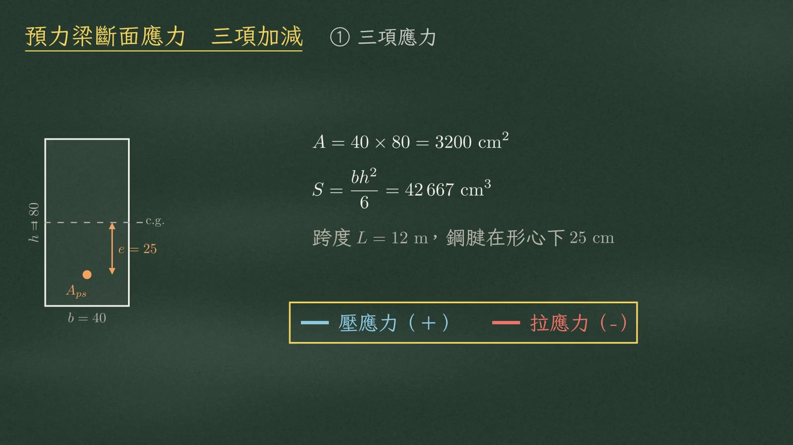
示範梁斷面 40×80 cm，跨度 12 m，鋼腱放在形心下方 25 cm，也就是偏心距 \(e=25\)。
先看傳遞階段：初始預力 \(P_i=150\ \text{tf}\)，加上梁自重彎矩 \(M_d=13.82\ \text{tf}\cdot\text{m}\)。
| 項 | 意義 | 頂纖維 | 底纖維 |
|---|---|---|---|
| ① \(P/A\) | 軸壓，全斷面同號 | +46.88 | +46.88 |
| ② \(P\cdot e/S\) | 偏心彎矩，上拉下壓 | −87.89 | +87.89 |
| ③ \(M/S\) | 外力彎矩，上壓下拉 | +32.40 | −32.40 |
| ④ 合成 | 梯形分佈 | −8.62（拉） | +102.37（壓） |
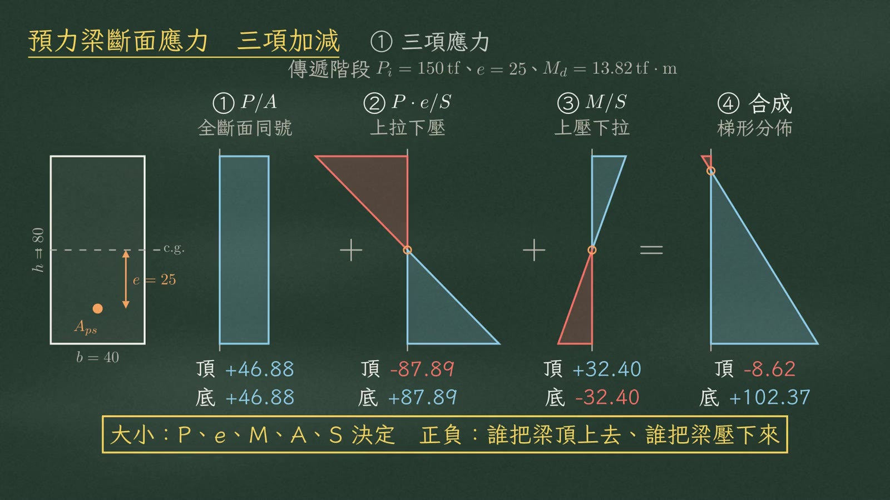
正負號不用背頂、底兩套公式，現場問一句就好。
| 項 | 誰在作用 | 梁的變形 | 頂纖維 | 底纖維 |
|---|---|---|---|---|
| 偏心項 \(P\cdot e/S\) | 鋼腱在形心下方，反拱力把梁往上頂 | 上拱：頂被拉開、底被壓緊 | （−）拉 | （＋）壓 |
| 外力項 \(M/S\) | 載重（含自重）把梁往下壓 | 下垂：頂被壓緊、底被拉開 | （＋）壓 | （−）拉 |
| 軸壓項 \(P/A\) | — | 全斷面恆為（＋） | ||
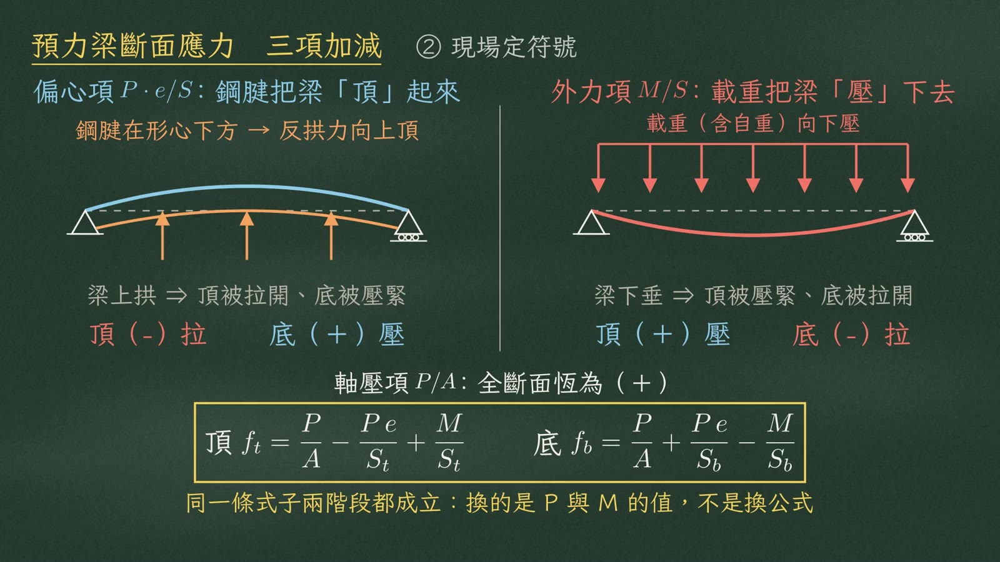
為什麼要檢核兩個階段？因為預力隨時間變小，從 \(P_i\) 掉到 \(P_e\)；載重隨時間變大，從只有自重變成全載重。而兩者造成的彎矩方向剛好相反。兩個最不利的時刻，乘上頂、底兩個危險纖維，就是四個控制點。
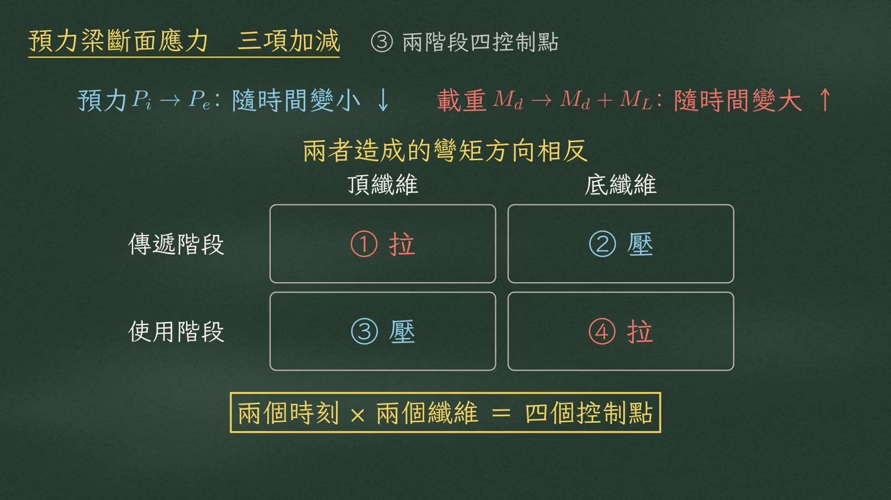
傳遞階段：預力最大、載重最小，梁被頂成上拱，混凝土強度用放張時的 \(f'_{ci}=280\)。
使用階段：預力扣完損失剩 \(P_e=120\ \text{tf}\)，彎矩加上活載重 45，共 \(58.82\ \text{tf}\cdot\text{m}\)，梁被壓成下垂，\(f'_c\) 用 350。
| 控制點 | 計算應力 | 容許值 | 結果 |
|---|---|---|---|
| ① 傳遞・頂纖維受拉 | −8.62 | \(-0.8\sqrt{f'_{ci}}=-13.39\) | OK |
| ② 傳遞・底纖維受壓 | +102.37 | \(0.6f'_{ci}=168\) | OK |
| ③ 使用・頂纖維受壓 | +105.06 | \(0.6f'_c=210\) | OK |
| ④ 使用・底纖維受拉 | −30.06 | \(-2\sqrt{f'_c}=-37.42\) | OK |
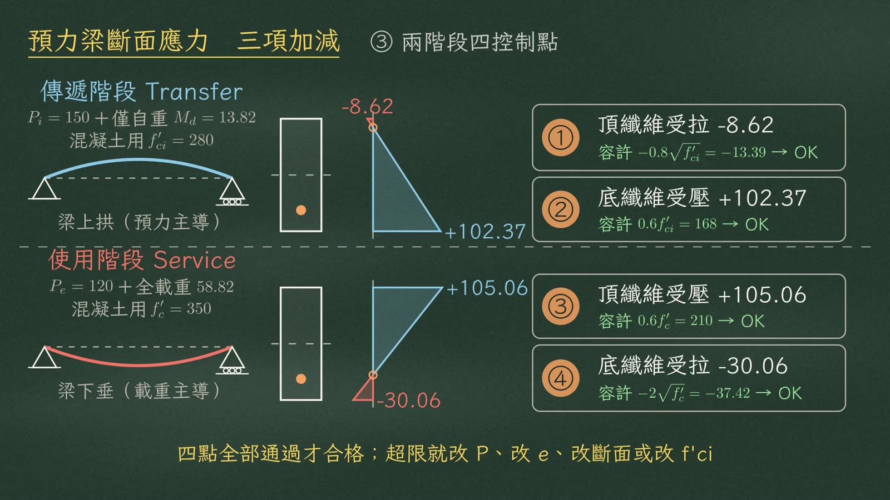
接著問：鋼腱偏心到哪裡，另一邊才開始出現拉應力？只看有效預力 \(P_e=120\ \text{tf}\)，不加外力彎矩。
| 偏心距 \(e\) | 狀態 | 頂 | 底 |
|---|---|---|---|
| 0 | 全斷面均勻受壓 | +37.50 | +37.50 |
| 13.33 | 頂纖維恰為 0 | 0.00 | +75.00 |
| 25（本例） | 核心外 → 頂受拉 | −32.81 | +107.81 |
這個 13.33 就是核心距。矩形斷面兩者都是 \(h/6\)，中間三分之一就是核心區：
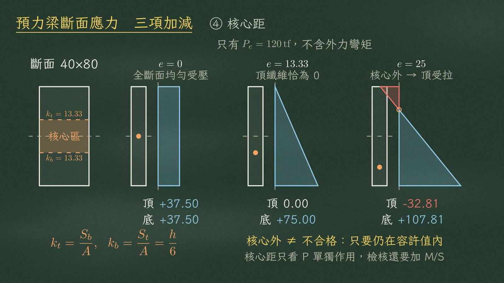
遇到非對稱斷面，例如梁上多一塊現場版，變成 T 形組合斷面：有效寬 \(b_e=150\)、版厚 \(t=15\)，梁 40×80；這裡假設版和梁的混凝土強度相同。形心不在半高，\(S_t\neq S_b\)。
第一步，分割求形心：
| 組成 | \(A_i\)（cm²） | \(y_i\)（cm） | \(A_iy_i\) |
|---|---|---|---|
| 版 150×15 | 2250 | 87.5 | 196 875 |
| 梁 40×80 | 3200 | 40.0 | 128 000 |
| Σ | 5450 | 324 875 |
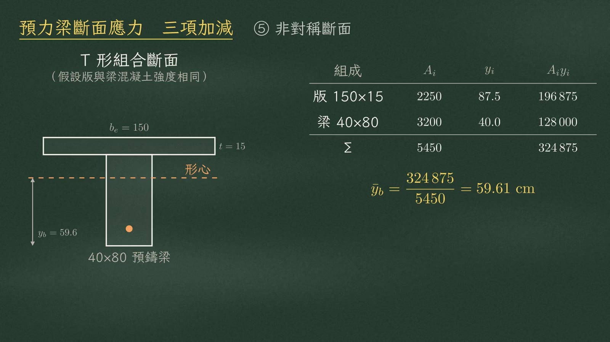
第二步，平行軸定理求 \(I\)；第三步，分別除以各自的距離：
所以同一個彎矩 \(M=32.4\ \text{tf}\cdot\text{m}\)，底纖維拉應力 −40.84，比頂面大得多，底纖維才是使用階段的危險面。
第四步，偏心距跟著改：
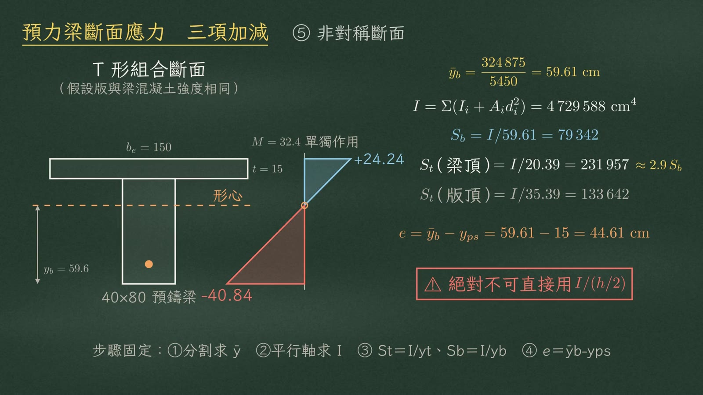
組合梁的關鍵是施工時序：每一刻，只有已經硬化、而且能傳力的那部分斷面在工作。
| 階段 | 斷面 | 承受 | 偏心距 |
|---|---|---|---|
| ① 張拉／放張 | 淨斷面 \(A_n, S_n\)（後拉法導管還沒灌漿） | \(P_i\) ＋ 梁自重 \(M_G\) | 25 |
| ② 灌漿後～組合前 | 全斷面 \(A_g, S_g\)（導管已填實，濕版尚無勁度） | \(P_e\) ＋ 濕版重 \(M_S\) 累加 | 25 |
| ③ 現場版硬化後 | 組合斷面 \(A_c, S_c\)（形心上移到 59.61） | 只再承受活載重與疊加靜載重，預力不再新增 | 44.61 |
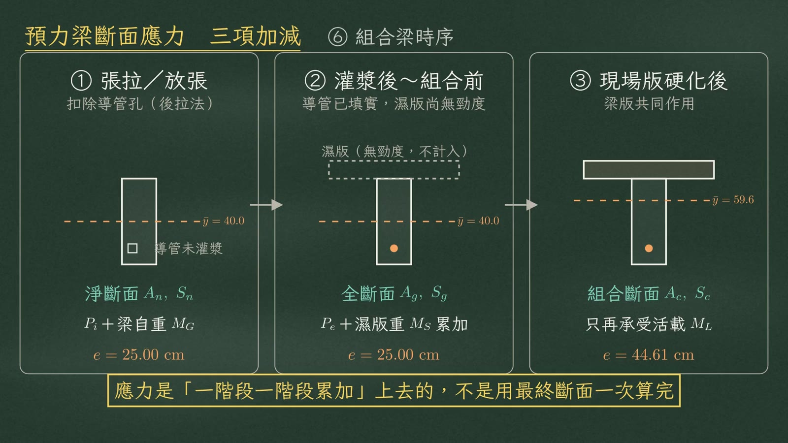
最常見的失分地雷，是濕版重。版寬 150、厚 15，每公尺 540 kgf，跨中彎矩：
濕混凝土沒有勁度，版還是液體，只是掛在梁上的重量，只能由原梁斷面獨自承擔。
| 採用斷面 | 計算 | \(\Delta f_b\) | |
|---|---|---|---|
| ✔ 正確 | 預鑄梁斷面 \(S_{b1}=42\,667\) | \(-\dfrac{9.72\times10^5}{42\,667}\) | −22.78 |
| ✘ 錯誤 | 組合斷面 \(S_{b3}=79\,342\) | \(-\dfrac{9.72\times10^5}{79\,342}\) | −12.25 |
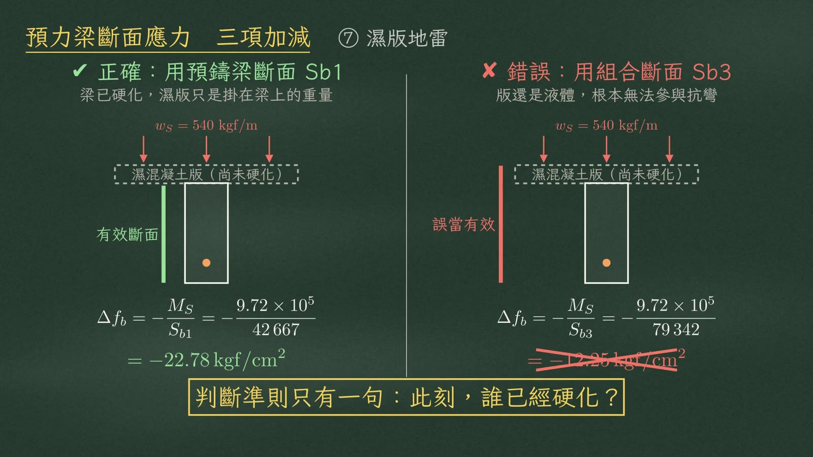
想像底纖維的壓應力，被外力彎矩一路抵銷：
| 狀態 | 彎矩 \(M\)（tf·m） | 底纖維應力 |
|---|---|---|
| ① 只有 \(P_e\) | 0 | +107.81 |
| ② 加自重 \(M_d\) | 13.82 | +75.41 |
| ③ 加使用載重 | 58.82 | −30.06 |
| ④ 到 \(M=M_{cr}\) | 61.96 | −37.42 ＝ \(-f_r\) → 開裂 |
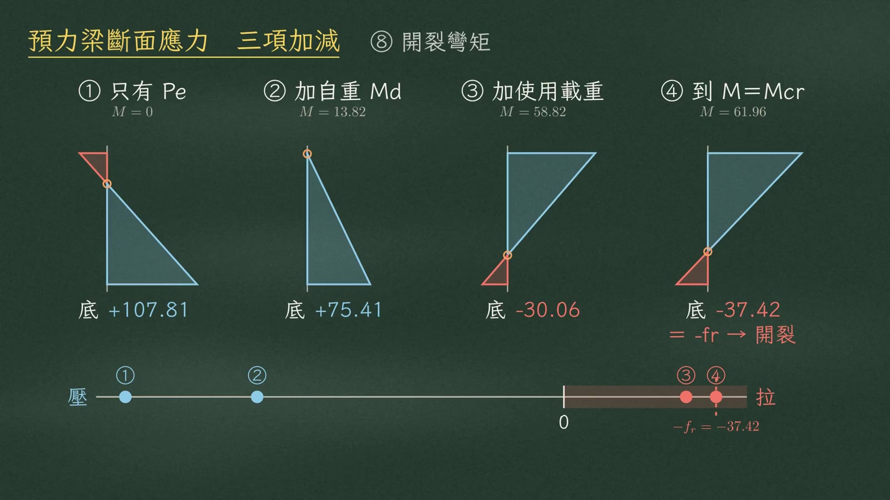
兩條式子就結束：
扣掉已經作用的自重 \(M_d\)，還能再加 \(48.14\ \text{tf}\cdot\text{m}\)。
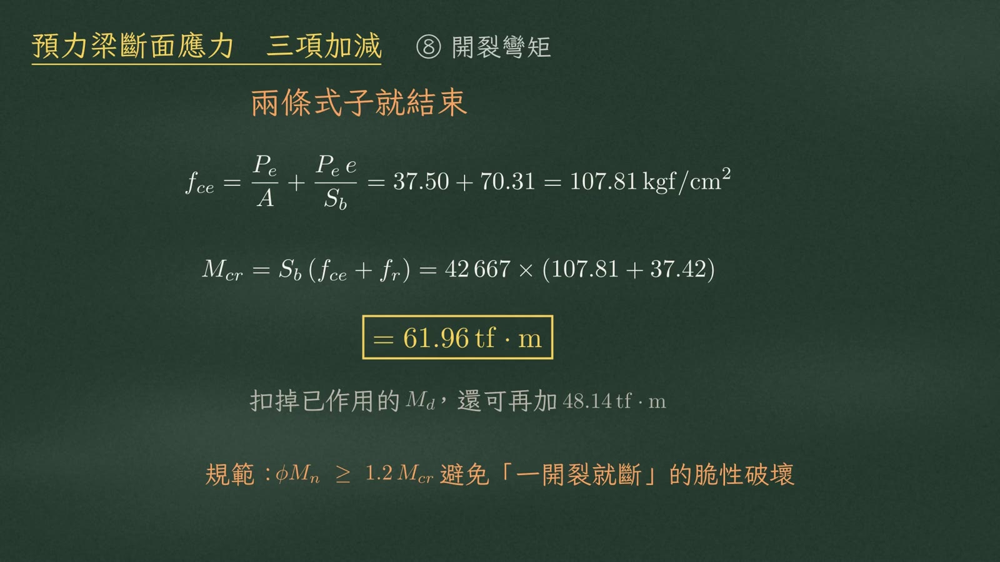
到了極限狀態，語言要整組換掉。
| 彈性語言（WSD）｜使用載重下 | 強度語言（LRFD）｜極限狀態 | |
|---|---|---|
| 斷面 | 全斷面有效、未開裂、應力線性分佈 | 已開裂，只剩壓力塊和鋼腱形成力偶 |
| 檢核 | 混凝土纖維應力 ≤ 容許應力 | \(\phi M_n\ge M_u\) |
| 鋼腱應力 | \(f_{pe}=10\,132\ (\approx0.55f_{pu})\) | \(f_{ps}=17\,024\)（接近 \(f_{pu}\)） |
| 檢核 | 值 | 結果 |
|---|---|---|
| \(\phi M_n\ \text{vs}\ M_u\) | 102.58 ≥ 88.59 | OK |
| \(\phi M_n\ \text{vs}\ 1.2M_{cr}\) | 102.58 ≥ 74.36 | OK |
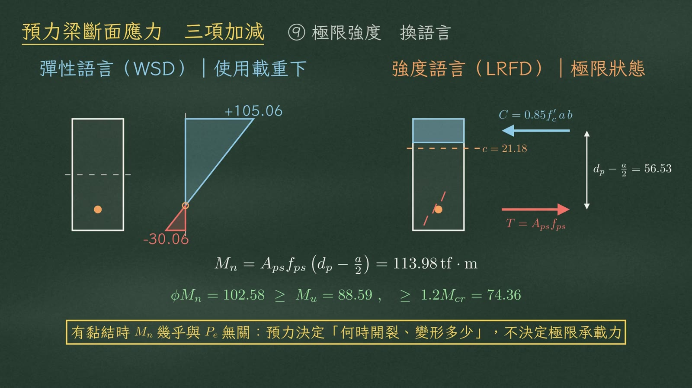
第三種題型是反算：把四個檢核式從不等式改成等式，解出來的就是設計量。以偏心距為例：
傳遞：頂纖維不得超拉 → \(e\) 上限
$$e\le\left(\frac{P_i}{A}+\frac{M_d}{S_t}+f_{ti}\right)\frac{S_t}{P_i},\qquad e_{\max}=26.36\ \text{cm（跨中）}$$使用：底纖維不得超拉 → \(e\) 下限
$$e\ge\left(\frac{M_T}{S_b}-\frac{P_e}{A}-f_{ts}\right)\frac{S_b}{P_e},\qquad e_{\min}=22.38\ \text{cm（跨中）}$$本例採用 25，正好夾在中間 \(22.38\le25\le26.36\)；兩個壓應力條件在本例不控制。
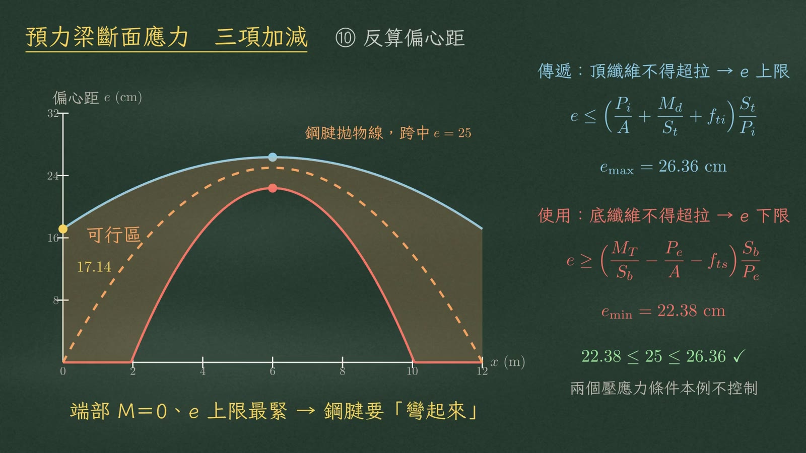
沿著跨度畫，兩條曲線夾出鋼腱可行區。端部彎矩為零，下限掉到零，上限只剩 17.14，反而最緊。
最後，用一張時間軸收攏全單元，以組合梁為例。
| 時刻 | \(P\)（tf） | \(M\)（tf·m） | 斷面 | 檢核 | 容許 |
|---|---|---|---|---|---|
| 張拉／放張 | \(P_i=150\) | \(M_G=13.82\) | 淨斷面 | ①頂拉 ②底壓 | \(0.8\sqrt{f'_{ci}}\)／\(0.6f'_{ci}\) |
| 灌漿 | 150 | 13.82 | 全斷面 | — | — |
| 澆置樓版 | \(P_e=120\) | \(M_G+M_S=23.54\) | 全斷面 | 累加應力 | \(0.6f'_c\) |
| 樓版硬化 | 120 | 23.54 | 組合斷面 | — | — |
| 使用載重 | 120 | \(+M_L\to55.94\) | 組合斷面 | ③頂壓 ④底拉 | \(2\sqrt{f'_c}\)／\(0.6f'_c\) |
| 極限狀態 | — | \(M_u=80.09\) | 組合斷面 | \(\phi M_n\ge M_u\) | \(1.2M_{cr}\) |
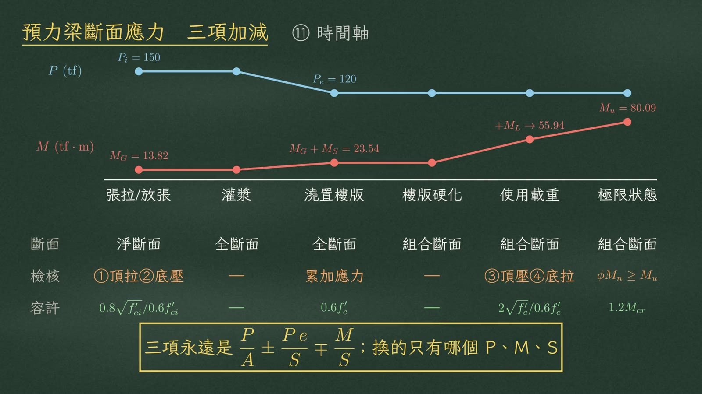
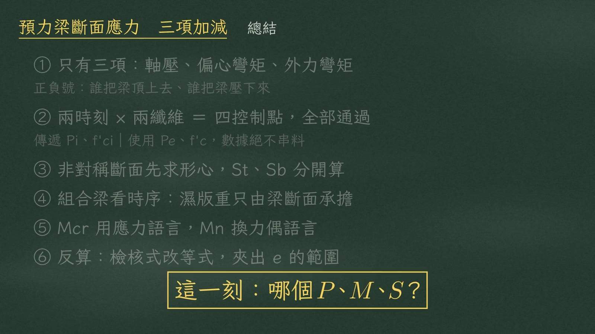